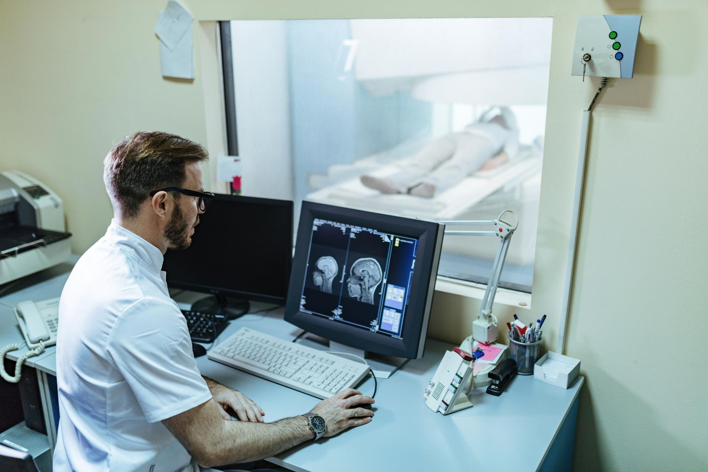

<style>
    .hashtags {
        text-align: center;
        max-width: 800px;
        margin: 20px auto;
        padding: 10px;
    }

    .hashtags a {
        display: inline-block;
        margin: 5px;
        padding: 8px 12px;
        font-size: 0.9rem;
        font-weight: bold;
        text-decoration: none;
        color: #fff;
        background-color: #264653;
        border-radius: 20px;
        transition: background 0.3s ease;
    }

    .hashtags a:hover {
        background-color: #001f3f;
    }

    body {
        font-family: Arial, sans-serif;
        margin: 0;
        padding: 0;
        background-color: #f5f5f5;
        color: #333;
    }

    h2 {
        font-family: "Arial", sans-serif;
        font-size: 2.5rem;
        font-weight: bold;
        color: #001f3f;
        margin-top: 20px;
        text-align: center; /* Center the title */
    }

    p {
        font-family: "Arial", sans-serif;
        font-size: 1rem;
        line-height: 1.8;
        text-align: justify;
        margin: 20px auto;
        max-width: 800px;
    }

    .container {
        display: flex;
        flex-direction: column;
        align-items: center;
        padding: 20px;
    }

    img {
        margin: 20px auto;
        border-radius: 8px;
        width: 100%;
        max-width: 800px;
        height: auto;
        box-shadow: 0 4px 8px rgba(0, 0, 0, 0.2);
    }

    .text-muted {
        font-weight: bold;
        color: #264653;
    }

    .references {
        max-width: 800px;
        margin: 20px auto;
    }
</style>

<section id="project-details">
    <div class="container">
        <!-- Page Header -->
        <h2>Protecting the Astronaut Brain: How Engineered Brain Tissue Helps Us Understand Space Radiation Risks</h2>

        <!-- First Image and Description -->
         
   <!--     <p><strong>Human Resilience in Long-Duration Spaceflight</strong></p>-->
      <p>
          Space is an unforgiving environment, and one of the biggest threats to astronaut health is radiation exposure. High-energy cosmic rays can damage brain tissue, impair cognition, and accelerate neurodegeneration—posing serious risks for long-duration missions to the Moon, Mars, and beyond.
      <p>
          A groundbreaking study from Baylor College of Medicine and Texas Children's Hospital, led by Prasad Admane and team, is using engineered vascularized human brain tissue micro physiological systems (MPS) to model the effects of space radiation on the human brain. Unlike traditional animal studies, this method replicates human-specific neurovascular responses, allowing researchers to study radiation-induced oxidative stress, inflammation, and potential cognitive decline in a controlled lab environment.
      </p>
      <h3>Why This Matters for Space Medicine:</h3>
      <ol>
        <li>Provides a more accurate model for studying radiation effects on the brain.</li>
        <li>Helps develop protective countermeasures for astronaut cognitive health.</li>
        <li>Could lead to new treatments for radiation-induced neurological disorders on Earth.</li>
      </ol>
      <p>
          At KinKinetics, we are deeply invested in neuroscience-driven solutions for space health and human performance. Studies like this pave the way for AI-driven cognitive monitoring, neuroprotection strategies, and real-time decision-support systems that could be critical for astronaut safety in deep space. Could AI and synthetic biology work together to safeguard the brain from radiation? The future of space health may depend on it.
      </p>

        <!-- Hashtags -->
        <div class="hashtags">
            <a href="https://www.google.com/search?q=SpaceMedicine" target="_blank">#SpaceMedicine </a>
            <a href="https://www.google.com/search?q=Neuroscience" target="_blank">#Neuroscience  </a>
            <a href="https://www.google.com/search?q=RadiationBiology" target="_blank">#RadiationBiology </a>
            <a href="https://www.google.com/search?q=AstronautHealth" target="_blank">#AstronautHealth </a>
            <a href="https://www.google.com/search?q=KinKinetics" target="_blank">#KinKinetics </a>
            <a href="https://www.google.com/search?q=HumanPerformance" target="_blank">#HumanPerformance</a>
            <a href="https://www.google.com/search?q=AIinNeuroscience" target="_blank">#AIinNeuroscience</a>
            <a href="https://www.google.com/search?q=FutureOfAstronauts" target="_blank">#FutureOfAstronauts</a>
            <a href="https://www.google.com/search?q=NeuromodulationTech" target="_blank">#NeuromodulationTech</a>
            <a href="https://www.google.com/search?q=BiohackingPerformance" target="_blank">#BiohackingPerformance</a>
            <a href="https://www.google.com/search?q=BalanceRecovery" target="_blank">#BalanceRecovery</a>
        </div>

        <!-- References Section -->
        <div class="references">
            <h3>References</h3>
            <ol>
                <li>Admane, P. et al. Investigating Radiation Effects on Engineered Vascularized Human Brain Tissue Microphysiological Systems. Baylor College of Medicine, Texas Children's Hospital.</li>
            </ol>
        </div>
    </div>
</section>
